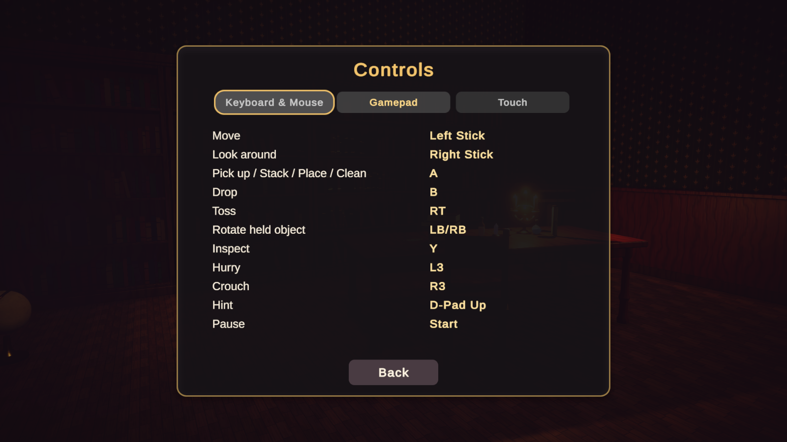

What's New & Changelog
Version 1.1 adds the two features players asked for most, carrying a stack and saving in the middle of a level, and fixes every issue reported since release.
Version 1.1
New: carry a stack of objects

- While holding an object, aim at another loose object and press Interact to add it to the stack. The demo player carries up to 5 objects.
- Placing an object brings the next one from the stack to the hand, so a full stack is emptied with quick clicks.
- Smart selection: aiming at a target swaps a matching stacked object into the hand.
- Configurable on the interactor: Carry Capacity, Maximum Stacked Size, Stack Offset, Stack Visual Scale, Auto Select Matching Object. New Carry In Stack flag on object definitions and a
StackFilterhook for code rules. - New HUD prompt Add to stack and a
3/5counter next to the object name.
Details: Carrying a stack.
New: save and continue inside a level

- Levels autosave every 30 seconds while something changed, on pause, on quit and before scene changes. The pause menu adds a Save Progress button.
- Opening the level again restores it silently and shows a Welcome back banner. The main menu Continue button opens the most recently saved level and level cards show In progress 37%.
- Snapshots are deleted when the level is completed, failed or restarted.
- New API:
TidyLevelManager.SaveProgress(),DiscardSavedProgress(),ProgressSaved,ProgressRestored;TidySaveService.SaveLevelSnapshot,TryLoadLevelSnapshot,DeleteLevelSnapshot,HasLevelSnapshot,GetSavedProgress,FindMostRecentSnapshotLevel. - Every Tidy Object in the demo scenes now has a unique id. Run Generate Missing Scene IDs on your own scenes.
Details: Saving progress inside a level.
New: cleaning methods
TidyCleanablehas Accepted Methods (Bare Hands, Scrubbing, Vacuum) andTidyCleaningToolhas a Method. Defaults accept everything, so existing levels keep working.- Aiming at a surface with the wrong tool shows Needs a scrubbing tool or Needs a vacuum.
- In the Cozy Room stains now need the sponge; empty hands and the vacuum no longer clean them.
Fixes
| Issue | Fix |
|---|---|
| Dropped objects sometimes floated in mid-air, most often in the Arcane Library | The drop probe no longer lands on the player's own capsule or on held objects, and objects resting on a picked-up object now settle down. |
| The tutorial could not be skipped with the cursor locked | Backspace (gamepad View) skips the tutorial and Enter confirms Continue steps. Shortcuts are shown on the buttons and configurable on TidyTutorialView. |
| Bare hands, the sponge and the vacuum all cleaned the same stains in the Cozy Room | Cleaning methods, see above. |
| Tools on the warehouse workbench could not be picked up | The workbench collider now ends at the bench top, and the interactor can reach objects embedded in furniture colliders. |
| Inspecting a drum made it vibrate | Physics objects become kinematic with colliders off while inspected; large objects are held further away so they fit the view. |
| Controls screen text shifted when switching between the three tabs | Rows use a fixed height and middle alignment, the tabs share one width and the active tab is highlighted. The gamepad Move prompt now reads Left Stick. |
Long objective counters such as 1289/2000 were cut off | Counters shrink to fit. |

Upgrading from 1.0
- Back up your project, then import the update over the existing
TidyUpFrameworkfolder. - Your own player prefab keeps single-object holding (Carry Capacity 1). Raise it on the
TidyInteractorto enable stacks. - Mid-level saving is on by default for every Level Manager. Run Tools > Tidy Up Framework > Generate Missing Scene IDs in each level scene and save it.
- If you copied the demo HUD, add a Save Progress button to your pause menu and assign it to
TidyPauseMenu.saveButton(optional; saving on pause works without it). - Code that switches over
TidyInteractionContextshould handle the newCanStackvalue.
Version 1.0
Initial release: data-driven objects, rules and targets; snap slots, slot groups, rows, containers, free zones and stack points; objectives, scoring, combos, hints, cleaning, before/after transformation and tutorials; keyboard, gamepad and touch input; complete UI; four demo levels and a sandbox.